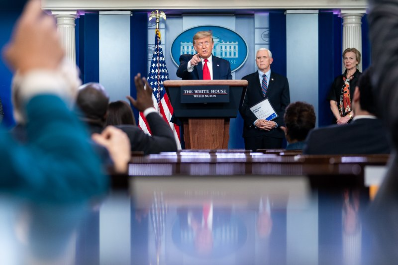

![NTK]()

The Ban Came With Its Own Evidence
Trump announced the ban on Sept. 18, and the next day reporters from CNN, MS NOW and Politico found their security credentials deactivated and were turned away at the gate (Daily Beast). His stated reason was that the outlets "shouldn't be able to constantly write or report FICTION and LIES" about him (ABC News). Then he pulled CNN from the television pool covering his United Nations trip, even though the network was supplying footage to other broadcasters (Daily Beast).
The Justice Department's account arrived later and was different. Lawyers said the passes were revoked on national security grounds, citing specific stories from each outlet. One was an MS NOW report on a proposal to put Trump's name on Ford's Theatre, which is a stretch for a classified-leak case (Daily Beast). Department lawyer Michael Velchik told the court that "access to the White House is a privilege, not a right" (ABC News).
That is where the government's case came apart.
The Judge Read the President's Own Words Back to Him
U.S. District Judge Timothy Kelly, whom Trump appointed in his first term, issued a temporary order on Sept. 24 restoring access. The reporters were still turned away at the gates that day (Daily Beast). That order was set to expire Tuesday, which would have reopened the door to another ban. Kelly instead issued a preliminary injunction that keeps the credentials in place until he reaches a final ruling or an appeals court intervenes (Al Jazeera).
His 26-page opinion found the outlets likely to win on due process and on two separate First Amendment claims (Daily Beast). On national security, Kelly found no evidence that Trump made the decision on those grounds from the start, and noted that Trump has never directly said so (Al Jazeera). The rationale, in effect, was written after the decision.
President Trump likely banned Plaintiffs from the White House because he believes that their reporting is generally inaccurate and biased against him.
U.S. District Judge Timothy Kelly, in his rulingTheodore Boutrous, the lawyer for all three outlets, has argued the ban was an attempt to "coerce better coverage" (Al Jazeera). The government's lawyers never really disputed the motive. They argued the president was entitled to have it.
A Win That Stops at the Door
The White House says it will appeal. An official told the Daily Beast that "the Fake News has no place demanding a spot in the President's Oval Office" and that the outlets could report from directly outside (Daily Beast). The new press secretary, Katie Zacharia, held her first briefing in the Brady Room on Monday, with the case hanging over the room (ABC News).
The injunction covers credentials, which is not the same as access to the president. Caitlin Vogus of the Freedom of the Press Foundation expects the administration to keep CNN and Politico out of pool coverage regardless, and warned against "turning pool duties into a reward for favorable coverage" (Al Jazeera). Pool spots decide who sees the president up close and who relays the account to everyone else. A reporter with a badge and no pool seat can enter the building and still miss the room where it happens.
The badge is safe for now. The question is who gets to stand where the president is.
The White House will appeal within days, and it will ask for a pause first.
The official who told the Daily Beast the outlets could "report from directly outside" also said an appeal is coming (Daily Beast). The most likely first move is not a full appeal brief but an emergency request to the U.S. Court of Appeals for the D.C. Circuit to suspend Kelly's injunction while the appeal runs. That request is cheap, fast and costs nothing if it fails. If it succeeds even briefly, the credentials go dark again, and the reporters are back at the gate while lawyers argue about whether they should have been.
The government's problem is the record it built for itself. Kelly found no evidence that national security drove the original decision (Al Jazeera), and appeals courts rarely rewrite a trial judge's reading of the facts. The Justice Department can argue that Kelly applied the wrong legal test. It will have a harder time arguing he misread a president who explained his motive in public. Expect the stay request to lose, and expect the department to keep pressing the "privilege, not a right" line anyway, because that is the argument it has left.
Pool access is where the White House will push back, and the court order will not reach it.
Kelly's injunction protects passes. It does not assign seats in the pool, the small rotating group of reporters who travel with the president and share what they see with everyone else. The administration already pulled CNN from the pool for the United Nations trip, and Caitlin Vogus of the Freedom of the Press Foundation expects it to keep CNN and Politico out regardless (Al Jazeera). That is the most probable outcome, because it complies with the letter of the order while preserving the punishment.
The winners are the outlets that stay in the pool, which now carry the first-hand account for rivals they are competing against. The losers are CNN and Politico, whose reporters can enter the building and still learn about the president's day from someone else's pool report. The newest test belongs to Katie Zacharia. A press secretary in her first week chooses between defending a pool policy a judge has already called likely discriminatory and quietly widening it. The first path invites a contempt motion from Boutrous; the second concedes the point. Her briefing-room seating chart will answer before any appeals court does.
A pool-exclusion motion is the likeliest next filing from the outlets.
Boutrous has already described the ban as an effort to punish coverage and force a different kind of reporting (ABC News). Pool exclusion fits that description exactly, and Kelly wrote the framework. The outlets will almost certainly go back to him asking that the injunction cover pool access, using the White House's own conduct as the evidence. That puts the same Trump appointee in the position of ruling on whether the administration found a side door. Judges tend to dislike being tested that way.
The badge ruling opens doors the White House's own filings never meant to open.
The Appeals Court Could Be Handed a Trump Appointee's Opinion Built From Trump's Own Posts.
The door that opened this week is the record itself. Kelly found no evidence that Trump invoked national security at the start, and the Justice Department's later account cited stories like the Ford's Theatre report. Those two things now sit side by side in a 26-page opinion by a judge the president chose. An appeals panel reviewing the stay request will not be reading a hostile jurist's reading of a neutral file. It will be reading a friendly jurist's reading of the White House's own statements. That is a combination the administration did not have last month, when the only order on the books was a temporary one set to expire.
The new press secretary is the other piece. Katie Zacharia has no history with this fight, which means she can still pick her position. If the Justice Department loses its stay request, she holds the one lever the lawyers do not: whether pool seats follow the badges.
That Opens a Second Door: Pool Seats Handed Out by a Rule Instead of a Mood.
This one depends on the first. If the appeals court refuses to pause the injunction, the "privilege, not a right" argument loses its best venue, and the pool becomes the only place left to punish coverage. That is also where the outlets' complaint gets strongest, because the United Nations exclusion is already in the record. A judge who has written that retaliation for viewpoint is likely unlawful does not need a new theory to apply it to seat assignments.
What becomes newly reachable is a written, neutral pool rotation, imposed by court order or adopted by Zacharia to head one off. The White House Correspondents' Association has long argued for rotation rules, but it never had a federal opinion to point to. Now it does.
The Third Door Is Where Rivals Choose Whether to Compete or Cooperate.
Outlets still in the pool carry the first-hand account that CNN and Politico cannot gather themselves. If the rotation stays discretionary, those outlets hold a quiet advantage, and a choice: take the access, or share it. Pool reports have always been shared by custom, since a pool that hoards defeats its purpose. If the excluded outlets win a seat rule, the custom turns into something closer to a precedent, one that binds the administration and the competing newsrooms alike.
That is the generative door, and it opens only if the previous two do. Newsrooms that spent years competing for the president's attention would be defending the same rule. A reporter in the back row would hold a claim to a seat that no press secretary could revoke over a headline, a protection the press corps has never had on paper.
The ban's defenders are telling two stories at once, and only one of them has a record behind it.
The Ban Was About National Security, Not the Coverage
The claim comes from the Justice Department, and it arrived after the fact. Its lawyers told the court that the passes were pulled because CNN, MS NOW and Politico had published "verifiable falsehoods about national security" and sensitive or classified information (ABC News). It is a useful claim because it turns a fight over viewpoint into a fight over secrets, and courts give presidents wide room on secrets. If it holds, a punishment for coverage becomes a security measure, and the ban survives.
The pull of the claim is easy to understand. Leaks are real, classified material does get published, and a reader who has watched Washington for a decade has seen officials burned by both. Nobody has to be gullible to find "national security" plausible.
What the claim needs is a timeline in which security came first. Kelly found none. He wrote that nothing in the record shows Trump decided on national security grounds "from the get-go," and that Trump has never directly said so (Al Jazeera). The only reasons Trump gave in public concerned accuracy and bias. The security rationale showed up in a courtroom, not in the announcement. A reason that appears only after a lawsuit does not explain the decision. It explains the defense.
The department's own exhibits do not help. Its list of offending stories included an MS NOW report on a proposal to put Trump's name on Ford's Theatre (Daily Beast). A story about a naming proposal for a theater can be wrong, or embarrassing, or both. It cannot be a threat to the republic. Putting it in a national security brief shows what the real category was: coverage the president disliked.
The Fake News has no place demanding a spot in the President's Oval Office.
White House official, to the Daily BeastThat official's line, offered while promising an appeal, makes the same point from the other direction. It speaks of "Fake News" and of who deserves a spot. It says nothing about classified information. Within one week, the government gave the public one reason and the court another.
Who benefits is plain enough. The Justice Department gets a legal argument it can defend on appeal, because a security rationale draws deference that a retaliation rationale never would. The White House gets to describe the story as a stand against leakers while keeping a press corps trimmed to friendlier outlets. Each reporter who hears "security" and shrugs does the administration's work for it.
Courts have heard this move before. In 1971, the Nixon administration argued that publishing the Pentagon Papers would endanger the country, and the Supreme Court let the presses run anyway. Security is a real power, and a real power is exactly why it makes a tempting cover.